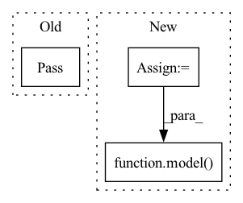

Pattern ID :28632
Before Change
// If not pinned_in: remove input channels corresponding to previous removed output channels
// If not pinned_in: remove zeroed input channels
// If not pinned_out: remove zeroed output channels
pass
return model
After Change
handle = module.register_forward_hook(lambda m, i, o, p=pinned: __remove_zeroed_channels_hook(m, i, o, p))
handles.append(handle)
x = torch.ones((1, 3, 224, 224))
model( x)
for h in handles:
h.remove()
In pattern: SUPERPATTERN
Frequency: 4
Non-data size: 3
Instances Fragment ID: 84534077
Project Name: eidoslab/simplify
Commit Name: de4a98b1310aa194a2ed49678260685fb5002a35
Time: 2021-05-20
Author: carlo.alberto.barbano@outlook.com
File Name: simplify.py
M Class Name: AnonimousClass
N Class Name: AnonimousClass
M Method Name: __remove_zeroed(2)
N Method Name: __remove_zeroed(3)
M Parent Class:
N Parent Class:
M File Name: simplify.py
N File Name: simplify.py
M Start Line: 89
M End Line: 101
N Start Line: 135
N End Line: 154
Before Change
pass
def forward(self, x):
pass
After Change
if self.num_D == 1:
return self.model(input)
result = []
down = input
for i in range(self.num_D):
model = getattr(self, "model_%d" % i)
result.append(model( down) )
if i != self.num_D - 1:
down = self.down(down)
return result Fragment ID: 84534076
Project Name: lotayou/cocosnet
Commit Name: 3dcf714c258ea399239d1362db5247110f254fd7
Time: 2020-05-24
Author: lotayou@pku.edu.cn
File Name: model/discriminator.py
M Class Name: Discriminator
N Class Name: Discriminator
M Method Name: forward(2)
N Method Name: forward(2)
M Parent Class: nn.Module
N Parent Class: nn.Module
M File Name: model/discriminator.py
N File Name: model/discriminator.py
M Start Line: 12
M End Line: 12
N Start Line: 61
N End Line: 70
Before Change
def run_inference(self, data):
// TODO
pass
def run_test(self, device):
// TODO
passAfter Change
model.inference_begin(data)
while True:
inputs = model.inference_preprocess()
results = model( inputs, training=False)
if model.inference_end(results):
break
return model.inference_result Fragment ID: 84534079
Project Name: intel-isl/open3d-ml
Commit Name: f052c22177f5d0670100ff49346adffff5938343
Time: 2020-09-09
Author: sanskaragrawal107@gmail.com
File Name: ml3d/tf/pipelines/semantic_segmentation.py
M Class Name: SemanticSegmentation
N Class Name: SemanticSegmentation
M Method Name: run_inference(2)
N Method Name: run_inference(2)
M Parent Class: BasePipeline
N Parent Class: BasePipeline
M File Name: ml3d/tf/pipelines/semantic_segmentation.py
N File Name: ml3d/tf/pipelines/semantic_segmentation.py
M Start Line: 76
M End Line: 76
N Start Line: 72
N End Line: 85